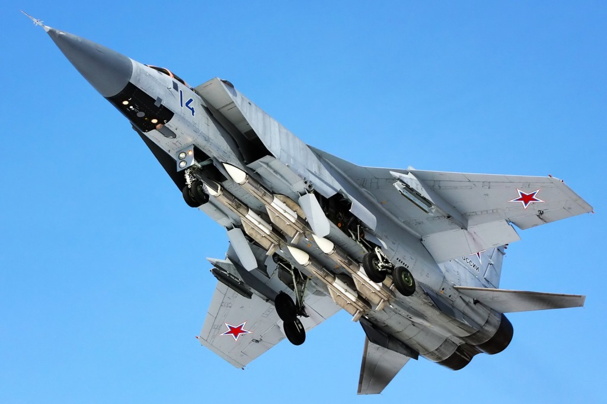

SOBRE A AERONAVE
O MiG-31 é um interceptador destinado a operações autônomas com ou sem o apoio de um posto de comando em solo (ground controlled interception – GCI), principalmente para uso na região norte da Rússia contra o ataque de mísseis de cruzeiro. A missão principal é: interceptar mísseis de cruzeiro e suas aeronaves de lançamento (bombardeiros) no menor intervalo de tempo possível; detectar e destruir alvos voando baixo, como mísseis de cruzeiro, UAVs e helicópteros; escolta de longo alcance de bombardeiros estratégicos no espaço aéreo internacional; desdobramento de forma rápida em resposta a ameaças provenientes de direções não abrangidas pelo sistema de defesa antiaérea terrestre.
Em 16 de setembro de 1975, o interceptador estratégico Mig-31 realizou seu primeiro voo. O Mig-31 foi o primeiro caça de quarta geração soviético e o primeiro a superar em vários quesitos a aviônica ocidental. Hoje, juntamente com o Su-27 e variantes, o MiG-31 ainda forma a espinha dorsal da Força Aeroespacial Russa.

FONTE: clique aqui
FONTE: clique aqui
ASSISTA A UM VÍDEO DA AERONAVE AQUI: clique aqui
voltar